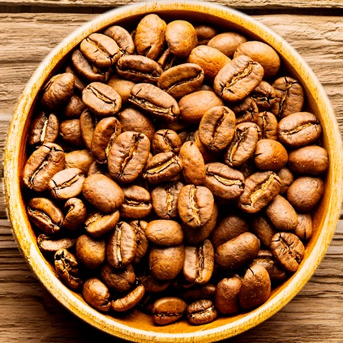
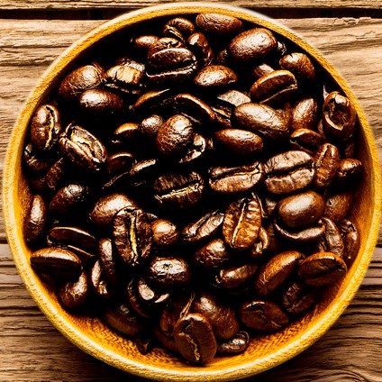
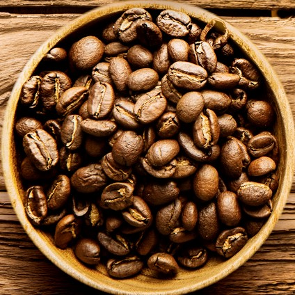

A hug with a mug!
Come on and order your coffee that fits your personality!
About us!
Raphaela
Beytullah
CSS Expert
Michael
CSS Expert
Alexander
CSS Expert
Bean to cup
Kaffee gehört für die meisten Menschen zum alltäglichen Leben wie Zähneputzen: Der morgendliche Kaffee zum Frühstück, Kaffee trinken mit Freunden oder beim Kundentermin, der Espresso nach dem Essen oder gegen das Nachmittagstief – unser täglicher Begleiter sozusagen. Aber hast du schon mal darüber nachgedacht, was Kaffee eigentlich ist (eine Bohne, ein Gemüse, eine Frucht?), wie er wächst, wo er herkommt und was alles passieren muss, bis er als braune Flüssigkeit in deiner Tasse landet? Wir erklären Dir, wie viele Schritte dieses wunderbare Naturprodukt hinter sich hat, bis Du es zubereiten und Deinen Kaffee genießen kannst. Unterschiedliche Methoden und Prozesse beim Anbau und der Aufbereitung beeinflussen dabei die verschiedenen Qualitätsstufen des Kaffees. Wir zeigen Dir hier beispielhaft den Weg unseres Demi Kaffees. Wir achten darauf, den Kaffee von kleineren Farmen und Kooperativen zu beziehen. Ebenso legen wir Wert auf Handarbeit, insbesondere an den Stellen im Prozess, an denen es die Qualität maßgeblich beeinflusst. Aber fangen wir von vorne an.
-
Kaffeepflanze
ein Baum mit kirschartigen FrüchtenDie Kaffeebohne ist der Samen der Kaffeekirsche und diese wächst an einem Baum. Normalerweise befinden sich zwei Samen in einer Kirsche. Du kannst dir also vorstellen, wie viele Kirschen es braucht für ein Päckchen Kaffeebohnen. Der Kaffeebaum wächst nicht überall auf der Erde. Die Kaffeepflanze mag es gerne warm, daher ist der wirtschaftliche Anbau nur in einem Gebiet zwischen ca. 22° Breitengrad nördlich und ca. 20°Breitengrad südlich möglich. Also grob gesagt, alles rund um den Äquator. Diese Region wird daher auch Kaffeegürtel genannt. Bei der Kaffeepflanze gibt es zwei Arten, die wirtschaftlich relevant sind: Die Coffea Canephora oder umgangssprachlich Robusta, und die Coffea Arabica. Sie unterscheiden sich hinsichtlich Aufbau, Anbauhöhe, Reifezeit, Empfindlichkeit gegen Wettereinwirkungen und Schädlinge sowie im Geschmack. Auch der Koffein-, Fett- und Zuckergehalt sind unterschiedlich. Von beiden Arten gibt es wiederrum verschiedene Sorten, die ebenfalls in all den genannten Punkten variieren.
-
Anbau
der Weg der Reifen KirscheDie Pflanzen werden auf Farmen kultiviert. Je nach Art und Sorte wächst die Pflanze in höherer oder niedrigerer Lage. Je höher das Anbaugebiet liegt, desto unwegsamer ist meist das Gelände und desto mehr Handarbeit ist nötig. Unsere Farmen betreiben hauptsächlich gemischten Anbau, um den Boden zu schonen und nachhaltig sowie pestizidfrei anzubauen. So wachsen beispielsweise bei unserem Kaffee aus Süd- und Mittelamerika auch Avocadobäume und andere Pflanzen zwischen den Kaffeepflanzen. Nach der Aufzucht müssen die Pflanzen großgezogen werden. Jetzt ist Geduld gefragt, denn ein Kaffeebaum blüht erst nach rund drei Jahren zum ersten Mal und bildet anschließend Früchte aus. Die weißen Blüten erinnern an Jasminblüten, die Früchte an Kirschen. Beim Anbau wird auch bereits der Grundstein für die Aromen gelegt. Je nachdem, wo sich die Farm befindet, welche Bodenbeschaffenheit, wie viele Sonnen- und Schattenstunden, Temperaturschwankungen, Niederschläge und Luftfeuchtigkeit die Pflanze abbekommt, prägen sich unterschiedliche Geschmacksrichtungen aus. Beeindruckend ist auch die Farbvielfalt der Kaffeekirschen: Vom unreifen Grün über unterschiedliche Gelbtöne, von Orangetönen bis hin zu sattem Rot leuchten die Kirschen in allen Schattierungen. Normalerweise muss die Kirsche satt rot sein, damit sie reif ist und geerntet werden kann. Es gibt jedoch auch Ausnahmen. Bei manchen Sorten sind bereits gelbe oder orangefarbene Kirschen voll reif. Bei diesen Früchten ist es deutlich schwieriger, festzustellen, wann die Frucht reif ist. Teilweise findet sich bei diesen Sorten die Farbe der Kirsche in der Varietätsbezeichnung wieder, wie beim Yellow Bourbon aus Brasilien.
-
Ernte
Selektion für den besten GeschmackWenn die Kirschen ihre volle Reife entwickelt haben, werden Sie gepflückt. Wie bereits erwähnt, handelt es sich bei der Kaffeepflanze um einen Baum. Dieser kann bis zu 15 Metern hoch werden. Allerdings würde eine solche Höhe die Ernte deutlich erschweren, daher wird der Baum auf den Kaffeefarmen klein gehalten, so dass er nur ungefähr zwei Meter hoch ist. Für einen guten Kaffee ist auch die Erfahrung der Erntehelfer wichtig. Es sollten nur die reifen Kirschen geerntet werden, da unreife, überreife oder defekte Kirschen dem Geschmack schaden. Die Erntehelfer pflücken die Kirschen von Hand und sammeln sie in einem Korb oder einem Sieb. Dabei gibt es zwei Methoden: Einerseits die Picking-Methode, bei der gezielt nur die reifen Kirschen vom Baum geholt werden, oder die Stripping-Methode, bei der ein ganzer Ast mit reifen Kirschen zwischen die Finger genommen wird und mit einer Handbewegung alle Kirschen vom Ast abgezogen werden.
-
Aufbereitung
Der Samen muss aus der KirscheSobald die Kirschen gepflückt wurden, geht es an die Aufbereitung – das heißt der Samen wird aus der Kirsche geholt. Zuerst werden die Kirschen von Verunreinigungen befreit und nochmals kontrolliert, ob sich überreife oder unreife Kirschen in die Ernte geschummelt haben. Je nach Region gibt es unterschiedliche Arten der Aufbereitung. Die drei Hauptaufbereitungsarten sind die Trockenaufbereitung (Natural), die halbtrockene (pulped natural) und die Nassaufbereitung (fully washed). Mehr zu den Aufbereitungsmethoden findest du hier. Die Aufbereitungen erfolgen teils maschinell teils von Hand. Nachdem die Samen von der Kirsche befreit worden sind, werden sie auf Trockentischen oder Trockenbänken zum trocknen in der Sonne ausgelegt. Da die Samen regelmäßig gewendet werden müssen, ist auch hier wieder Handarbeit angesagt.
-
Grading
der letzte Schritt zum RohkaffeeWenn die Samen getrocknet sind, werden sie nach Größe sortiert. Mitunter werden dabei auch die sogenannten „Peaberries“ aussortiert. Das sind die Kirschen, in denen nur ein Samen war. Normalerweise hat die Kirsche zwei Samen. In diesem Zustand spricht man bereits von Rohkaffee.
-
Der Kaffeesack
die gute JuteVJe nach Sorte, Güte und Qualität wird der Rohkaffee verpackt. Bei eher hochwertigem Kaffee werden für den Weitertransport oftmals Jutesäcke verwendet, die mit jeweils 50, 60, oder 70kg Rohkaffee befüllt werden. Jutesack klingt zwar erstmal romantisch, meistens wird aber heutzutage eine zusätzliche Kunststoffverpackung innerhalb des Sacks verwendet, um den Kaffee noch besser zu schützen. Weniger hochwertiger Kaffee wird teilweise direkt in den Transportcontainer gepumpt. Bei Kaffee dieser Güteklasse wir auch bei der Ernte und der Aufbereitung weniger sorgfältig gearbeitet, daher kann es sein, dass sich Verunreinigungen im Rohkaffee befinden, sowie Steine, Äste oder Blätter. In unserer Rösterei kommen nur Jutesäcke an.
-
Distribution
über den großen OzeanFür gewöhnlich wird der Rohkaffee mit dem Schiff transportiert. Wenn der Kaffee seinen Zielhafen erreicht hat – für Europa und speziell für Deutschland ist das meistens der Hamburger Hafen – wird er zu den Röstereien verschickt. Es gibt auch noch die Möglichkeit, den Kaffee über eine Kaffeebörse zu beziehen. Beim direkten Handel ist diese Option allerdings irrelevant.
-
Röstung
das Herauskitzeln der AromenWenn der Rohkaffee beim Röster ankommt, wird zunächst seine Qualität überprüft und anschließend ein Röstprofil erstellt. Dieses wird für jede Ernte neu festgelegt, da sich das Geschmacksprofil von Ernte zu Ernte verändern kann. Das Röstprofil wird anhand von verschiedenen Proberöstungen bestimmt, die anschließend beim sogenannten „Cupping“ verkostet werden. Diejenige Röstung, die das beste Geschmacksprofil aufweist, wird dann als Röstprofil festgelegt und alle Bohnen der verkosteten Ernte werden nach derselben Prozedur geröstet. Wenn der Kaffee nach der Röstung komplett ausgekühlt ist, muss er noch etwas ausgasen. Bei dem Gas handelt es sich um CO2, welches beim Rösten entsteht. Für die Zubereitung als Filterkaffee kann der Kaffee nun direkt verwendet werden. Bei Espresso ist es hingegen ratsam, den Kaffee noch ca. 5 -7 Tage ausgasen zu lassen, um ein gleichbleibendes Geschmackserlebnis zu garantieren. Unser Röster röstet im Trommelröster. Dabei verwendet er maximal 12kg Rohkaffee pro Röstvorgang. Die Röstung in kleinen Mengen ermöglicht eine gezieltere Qualitätskontrolle.
-
Versand
aus dem Trommelräster in Deine TasseDamit der frisch geröstete Kaffee beim Versand möglichst wenige Aromen verliert, verschicken wir ihn in einer speziellen Aromaschutzverpackung. Der Kaffee wird in kleinere Mengen portioniert, verschweißt und mit dem Röstdatum versehen und macht sich dann auf die Reise zu Dir. Wenn die kleine Kaffeereise Dir Lust auf Kaffee gemacht hat, oder falls Du nach so viel Text erstmal einen Kaffee brauchst, besuch uns oder schreib uns eine Nachricht!
Quelle: Goodbean.coffee
The different types of coffee...

Arabica

Liberica

Robusta

Arabusta
Cup of Coffee
Cafe Verlängerter
Ein Verlängerter ist eine Kaffeespezialität aus Österreich. Für die Zubereitung dieses Kaffees wird meist ein Schwarzer, Brauner oder gelegentlich auch ein Espresso mit Wasser gestreckt, also verlängert.

Cafe Latte
Caffè Latte wird klassisch mit einem doppelten Espresso, der mit reichlich heißer Milch aufgegossen wird, serviert.
Cappuccino
Der klassische Cappuccino hat einen dichten Milchschaum in der Mitte der Tasse und einen klaren braunen Espressorand!